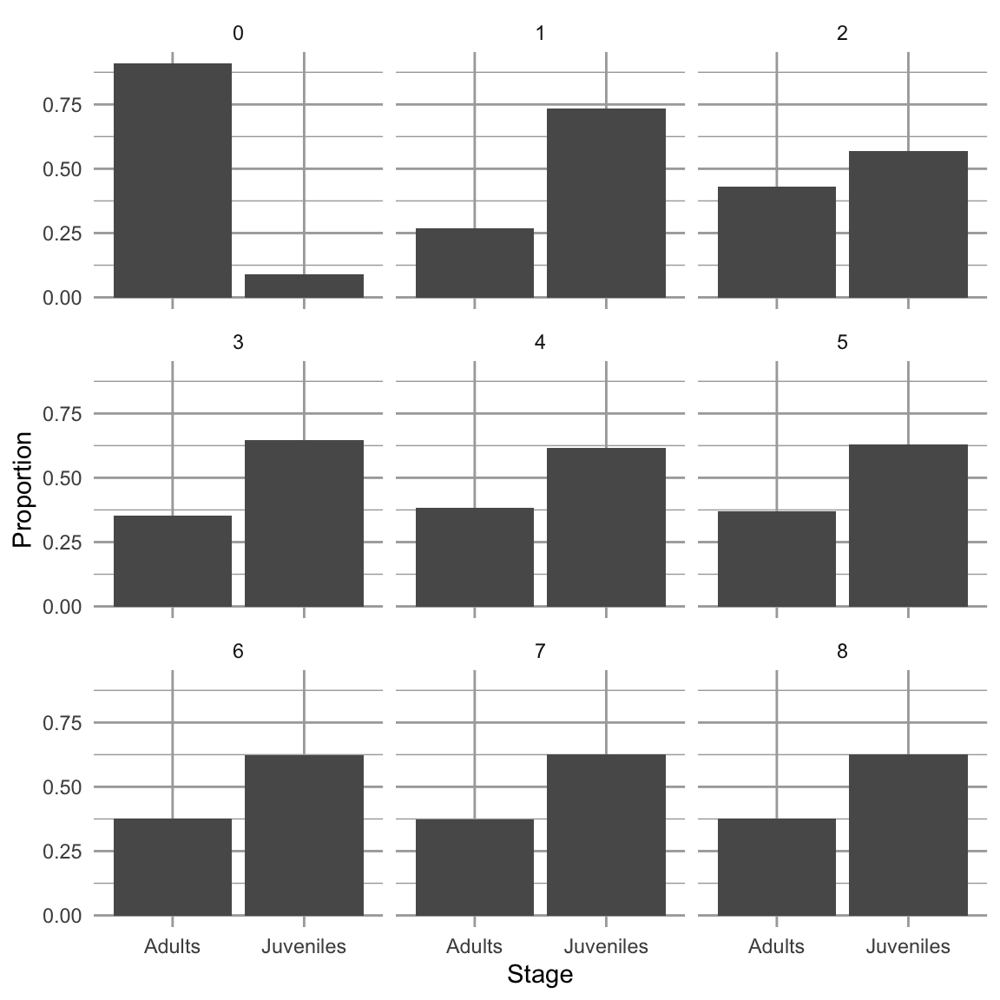

4 Density-independent Demography
In the preceding chapter, we listed Hastings’ (Hastings 2011) key principles and assumptions of single species population growth. One of the key assumptions is that “all individuals in a population are identical.” In this chapter, we elucidate an important violation of that assumption, population structure.
Figure 4.1: Demography of human populations of Mexico and Sweden. Based on 1990 data from US Census Bureau, Population Division, International Programs Center.
Populations have structure. Consider the human populations of Mexico and Sweden in 1990. Mexico had a much larger fraction of their population in child bearing age classes or younger (Fig. 4.1). In addition, the age-specific fertility rate was higher in Mexico, especially for younger women (Fig. 4.1). How did this happen, and why did Mexico have so many young people? What were the consequences of this for their culture, their use of resources, their domestic and foreign policies, and their future population growth? How about Sweden?
Demography is the study of populations with special attention to their structure (Lincoln, Boxshall, and Clark 1998). Originally, age-based human demography was the provenance of actuaries who helped governments keep track of the number citizens of different ages and thus, for instance, know how many would be available for conscription into the military.22
The reason we model the structure of populations is because various demographic rates vary markedly with these stages. Juveniles produce no offspring. Very few seeds survive an entire year, whereas some large adults survive very well. We use structure when that structure is associated with important differences in demographic rates: survival, fecundity, and growth.
The structure to which we refer is simply the organization of populations by some character such as life history stage, age, or size. Sizes and ages are often reduced to categories such as we saw in human populations (e.g., 0–4.9,y, 5–9.9,y,…). Sizes may be based on any reliable and repeatable measure that relates to demographic rates and are similarly binned. Life history stages may include eggs, larvae, metamorphs, juveniles, and adults in amphibians, or seeds, rosettes, and reproductive stems in herbaceous plants. With a variable such as size, we don’t even need to use categories, but rather we can use size as a continuous variable; we address this briefly later in the chapter.
Structured population models allow us to intertwine species-specific natural history and quantitative methods. This makes the approach especially appealing for the conservation biology of threatened and endangered species. We use structured population models to improve our better understanding of a population or improve predictions of its future dynamics, or guide the management of the population. We might learn a lot about what controls the abundance of a species if we can test ideas related to different stages, ages, or sizes. What limits the population growth of the Western toad – is it egg survival, or overwintering survival of juveniles? Where should we invest our efforts to control garlic mustard (Alliaria petiolata) – killing the first year rosettes, or the second year adults? Why are cacti generally endangered (Goettsch et al. 2015)—is the smallest size, or the largest size that is most essential to insure long-term survival? We can use structured population models to address such questions.
4.1 A two stage matrix model
Figure 4.2: Like all amphibians, the Western toad (Anaxyrus boreas) has a complex life cycle, with several life history stages. Adults breed in early spring, laying eggs in water. The larvae (tadpoles) hatch and develop over the spring and summer, and then metamorphose (become metamorphs), and then juveniles. Juveniles require more than a year to mature. Adults can live up to about a decade. American toads (A. americanus) do the same thing.
A matrix model of a structured population consists of stages and transitions. Vonesh and Cruz (2002) used matrix projection to assess the importance of egg mortality for declines in amphibian populations. Their model of the Western toad (Anaxyrus boreas, Fig. 4.2) comprises two stages (juveniles and adults) and four transitions.
In all structured popuation models23, a transition is the annual contribution of an individual in stage \(i\) at time \(t\) to stage \(j\) at \(t+1\). In Fig. 4.2, the transition from juvenile to adult is the probability that a juvenile survives an entire year and also matures, becoming sexually viable.24 The transition from juvenile to juvenile is the probability that a juvenile survives a year and does not mature. The transition from adult to adult is the probability that an adult survives the year. These three transitions are probabilities.
The transition from adult to juvenile (Fig. 4.2) is typically referred to as fecundity, and it is the product of several events. Vonesh and De la Cruz assume that this transition depends on the population sex ratio, the average clutch size of a female, egg survival, larval survival and metamorphosis, and the overwintering survival of metamorphs. They even assume that larval survival depnds on denisty. Thus what we refer to as “fecundity”25 is far more than just average clutch size because it must include all the processes that occur over the year associated with producing a clutch and the survival of that clutch.
Structured population models allow us to take advantage of the natural history of our study species. For our study population, at a minimum, we need to (i) identify stages that differ in their demographic rates, and (ii) when individuals tend to breed.
Consider the example of the Western toad (Anaxyrus boreas). As with all amphibians, survival and fecundity rates depend heavily or entirely on life history stages of egg, larvae (tadpole), juvenile, and adult. We would know that breeding occurs in early spring, depending on latitude and elevation. If we wanted to model juveniles and adults, we would typically sample a population prior to breeding when juveniles and adults are just starting to become active.
The design of a structured population model depends on the sampling or census schedule. These models are typically assume an annual census that occurs just before, and just after seed set, egg laying, or births. We refer to these as pre-breeding or post-breeding census models. Vonesh and Cruz (2002) (Fig. 4.2) use a pre-breeding census model. This is because only juveniles and adults are present in the population at the time of sampling. If the design assumed a post-breeding census (later in the year), it would probably include three stages, with larva (tadpoles) in addition to juveniles and adults.
The reasons for using a pre- vs. post-breeding census include our ability to actually identify and sample stages, and parameter estimation. For example, it may be easy to accurately estimate the abundance of juvenile and adult toads, but very difficult to estimate larval density and larval survival. In such a case, we could represent the adult to juvenile transition as a black box, estimated as the total number of new juveniles in year \(t+1\) divided by the number of adults in year \(t\).
We can draw a two different types of life cycle graphs for this two-stage model in just such a population (Fig. 4.3). Some people find one more illuminating than the other. It is useful to be able to use both.
Figure 4.3: Two types of life cycle graphs. These both represent an amphibian pre-breeding model.
All the stages must be present during the annual census, and each arrow or transition must represent everything that happens over the entire year. Notice the transition from adult toad to juvenile toad (Fig. 4.3) includes egg production, egg survival, tadpole or larva survival and growth, and metamorphosis out of the aquatic stage. This are obviously important events. We make explicit only those stages that we count during our census; all other other events are iplicit within the transitions.
Once we have a life cycle diagram (Fig. 4.3), we create a transition or projection matrix that represents mathematically all of the stages and transitions between stages (4.1). This matrix will have one row and one column for each stage, and the columns represent the stages in year \(t\) and the rows represent the stages in year \(t+1\). We refer to a single column by j and a single row by i. Each column represents stage j in year \(t\), and each row represents stage i in year \(t+1\). For our amphibian example, the transition matrix will have two rows and two columns. It will be a “two by two”, or \(2 \times 2\) matrix. \[ \begin{equation} \tag{4.1} \mathbf{A} = \left( \begin{array}{cc} p_{11}&F_{12} \\ p_{21}&p_{22} \end{array} \right) \end{equation} \] If (4.1) represents the Western toad (Fig. 4.3), then transition
- \(p_{11}\) is the probability that juveniles survive but fail to mature,
- \(p_{21}\) is the probability that juveniles survive and also mature,
- \(p_{22}\) is the probability that adults survive, and
- \(F_{12}\) is contribution of the average adult to the juvenile stage.
In addition to fecundity, survival, maturation or growth from one stage to the next, some organisms undergo regression (Fig. 4.4). Regressing means to transition from a later stage to an earlier stage. For instance, and plant can shrink in size do to physical damage, disease or herbivory. A plant can also return temporarily to a non-reproductive stage after a large bout of reproduction. These are examples of regression (Fig. 4.4).
One assumption we are making is that individuals set seed, or give birth, all at once. Therefore, we refer to our model as a birth-pulse model. On the other hand, if we assume that we have continuous reproduction throughout the year, we do things differently, and would refer to this as a birth-flow model. Whether a population is breeding continuously over a year, or whether reproduction is seasonal, will influence how we estimate fecundities. Even for synchronously breeding populations, many models pool years into a single age class or stage. The interested reader should consult an authoritative text such as Caswell (2001).
Figure 4.4: A transition matrix, in which each element in the matrix describes the probability that an individual of a given size \(j\) at time \(t\) appears as size \(i\) and time \(t+1\). Reproduction typically results in the minimum size, stage, or age. This matrix may be composed of a small number of rows and columns (2-10), or, in the case of integral projection, an infinite number of rows and columns. The number of rows is equal to the number of columns.
A life cycle graph (Figs. 4.2, 4.3) and the corresponding transition matrix (4.1) constitute our model. The matrix A for our structured population is directly analogous to \(\lambda\) for our unstructured model of discrete population growth in the previous chapter.26
Later, we will project the population in an analogous way, using \[\mathbf{ N_{t+1} = A N_t}\] and to do that, we need a refresher on matrix multiplication.
4.2 A brief primer on matrices
We refer to matrices by their rows and columns. A matrix with three rows and one column is a \(3 \times 1\) matrix (a ``three by one’’ matrix); we always state the number of rows first. Matrices comprise elements; an element of a matrix is signified by its row and column. The element in the second row and first column is \(a_{21}\). The dimension of a matrix is its number of rows and columns.
To add two matrices, they must have the same dimensions. Consider two matrices, A and B . To add these two matrices we simply add the elements in the same row and column of both matrices, as below.
\[\begin{align*} \mathbf{A} &= \left( \begin{array}{cc} a & b \\ c & d \end{array} \right); \; \mathbf{B} = \left(\begin{array}{cc} m & o\\ n & p \end{array}\right)\\ \mathbf{A+B} &= \left( \begin{array}{cc} \left( a+m \right) & \left(b+o \right)\\ \left(c+n \right) & \left(d+p \right) \end{array} \right) \end{align*}\]
Multiplying matrices is a little more complicated. To do so, we mutliply elements and then sum them:
- multiply each row element of the first matrix (A) times each column element of the second matrix (B),
- sum the element-wise products, and
- place this sum in the respective element of the final matrix.
This process is what we refer to as a dot product or sometimes inner product. When we have two vectors of equal length \(x\) and \(y\) the dot product is \[x \cdot y = x_1y_1 + x_2y_2 + \ldots + x_n y_n\] A dot product begins with two equal length vectors and returns a single number (i.e. a scalar).
Consider the matrix multiplication in (4.2). We first multiply each element of row 1 of A (\(a\; b\)), times the corresponding elements of column 1 of B (\(m\; n\)), sum these products, and place the sum in the first row, first column of the resulting matrix. We then repeat this for each row of A and each column of B.
\[\begin{align} \tag{4.2} \mathbf{AB} &= \left( \begin{array}{cc} \left( am + bn \right) & \left(ao+bp \right)\\ \left(cm + dn \right) & \left(co + dp \right) \end{array}\right) \end{align}\]
To do this, the number of columns in the first matrix must equal the number of rows in the second matrix. It also means that the resulting matrix will have the same number of rows as the first matrix, and the same number of columns as the second matrix. Multiplying a \(2 \times 2\) matrix by a \(2 \times 1\) results in a \(2 \times 1\). Multiplying a \(3 \times 3\) matrix by a \(3 \times 1\) results in a \(3 \times 1\). We cannot multiply a \(2 \times 1\) matrix by a \(2 \times 2\) because the number of columns in the first matrix (1) does not match the number of rows in the second matrix (2).
Let’s define two \(2 \times 2\) matrices, M and N, filling in one by rows, and the other by columns.
## [,1] [,2]
## [1,] 1 2
## [2,] 3 4## [,1] [,2]
## [1,] 10 30
## [2,] 20 40Adding these matrices is simple. Here we do the first element by hand, and then sum the matrices all at once.
## [1] 11## [,1] [,2]
## [1,] 11 32
## [2,] 23 44To mulitply M and N, we multiply and then sum the first row of \(M\) by the first column of \(N\), and make this element \(a_{11}\) of the resulting matrix product.
## [1] 50This is the dot product.
In R, we must use %*% to signify that we mean matrix multiplication.
## [,1] [,2]
## [1,] 50 110
## [2,] 110 250If we multiply M times a \(2 \times 1\) matrix D, what should we get?
## [,1]
## [1,] 500
## [2,] 1100Make sure you could write out the multiplication and summation for each element in the resulting matrix.
The transpose of M is \(\mathbf{M^T}\)
## [,1] [,2]
## [1,] 1 2
## [2,] 3 4## [,1] [,2]
## [1,] 1 3
## [2,] 2 4We use the transpose of A to calculate reproductive value, later in the chapter.
4.3 Decomposing A
A slightly different way to conceptualize our transition matrix is to consider it the three separate matrices, one each for survival, growth, and fecundity, \[\mathbf{ A = SG + F }\].
Survival, S, and growth, G, havethese elements:
- each stage \(j\) has its own probability of survival \(s_j\), which describes survival of each stage from \(t\) to \(t+1\).
- each survivor in stage \(j\) will grow or regress into a different stage, or remain in the same stage, with probability \(g_{ij}\).
In a demographic context, fecundity, F, is the surviving number of offspring produced by the average individual in stage \(i\). Sometimes this is a complete black box, in which we can only count the adults in year \(t\) and the offspring in year \(t+1\). Other times, we can use estimates of the probability that an individual in stage \(i\) reproduces at all, the average number of offspring of an individual that does actually reproduce, and the survival and growth of the adults or the resulting offspring. It all depends on the detail we have of our study system. And, of course, it depends heavily on whether we census our population shortly before reproduction (pre-breeding census), or shortly after reproduction (post-breeding census).
For our Western Toad (Fig. 4.2), this results in \[\begin{equation*} \tag{4.3} \mathbf{A = SG + F} = \left( \begin{array}{c} \sigma_j\\ \sigma_a \end{array} \right) \left( \begin{array}{cc} 1-\mathrm{P} & 0 \\ \mathrm{P} & 1 \end{array} \right) + \left( \begin{array}{cc} 0 & \rho \phi \sigma_e \sigma_t \sigma_m \\ 0 & 0 \end{array} \right) \end{equation*}\]
where \(\sigma_j,\,\sigma_a\) are survival of juveniles and adults, and P is the probability of juvenile growth, given survival. If an adult survives it always remains an adult (\(g_{22}=1\)) and never regresses (\(g_{12}=0\)). Fecundity occurs only in adults, and it is the product of the sex ratio (\(\rho\)), average clutch size per female (\(\phi\)), egg survival (\(\sigma_e\)), survival of tadpoles (\(\sigma_t\)), and the overwintering survival of the metamorphs (\(\sigma_m\)).
Following the rules of matrix multiplication and addition, we now have
Vonesh and de la Cruz went further and added density-dependence using a term for the negative effects of high tadpole density on tadpole survival and growth. We do not show that here, but regardless how complex the natural history gets, we can build natural history into our models.
\[\begin{equation*} \tag{4.4} \mathbf{SG} = \left( \begin{array}{cc} \sigma_j (1-\mathrm{P}) & 0 \\ \sigma_j \mathrm{P} & \sigma_a \end{array} \right) \; ; \; \mathbf{A} = \left( \begin{array}{cc} \sigma_j (1-\mathrm{P}) & \rho \phi \sigma_e \sigma_t \sigma_m \\ \sigma_j \mathrm{P} & \sigma_a \end{array} \right) \end{equation*}\]
4.4 A three stage model
Now we describe a three-stage model of a plant population. Like our amphibian example, it is a pre-breeding model, relying on a pre-breeding census. Nonetheless, it includes a seed stage for the seed bank, where seeds may be more than one year old. Eleanor Pardini et al. (n.d.) and colleagues modeled garlic mustard (Alliaria petiolata), a biennial plant species that is an exotic invasive species in the eastern deciduous forest of the U.S. The stages they choose to represent were those present in May: seeds in the soil seed bank, 1–2 month old immature rosettes, and adults (Fig. @fig:garlic1).Figure 4.5: The life cycle of garlic mustard using a post-breeding census (Pardini et al. 2009). The census takes place in May of each year. Each arrow represents the transition from May to May. Seeds germinate in early spring and become rosettes (basal leaves near the soil surface). The rosettes experience mortality all summer, fall, and winter. Surviving rosettes become reproductive adults the following spring a summer. Adults flower and are pollinated in June, after which the fruits ripen and seeds mature. Seeds overwinter for at least six months before germinating in the spring. Not all seeds germinate, but they may remain viable in the seed bank for several years. Thus, the complete life cycle at least two years. Once the seeds germinate, the plant requires over a year to reach maturity, and produce flowers, fruits and seeds.
Let’s work through these probability transitions.
- \(s_1\), a germinated seed survives as a rosette.
- \(s_2\), surviving from May to August as a rosette.
- \(s_3\), surviving from August to early May and becoming a reproductive plant.
- \(v\), a seed is viable (survives and can germinate).
- \(g_1\), a viable seed germinates in the first season, or \(1-g_1\) remains un germinated
- \(g_2\), a viable seed germinates in the second season or \(1-g_2\) does not.
Fecundity, \(f\), is the average number of seeds per reproductive plant.
The transition matrix A would thus be
\[\begin{equation*} \tag{4.5} \mathbf{A} = \left( \begin{array}{ccc} 1-g_2 & 0 & v(1-g_1)f \\ g_2 s_1 & 0 & v g_1 s_1 f \\ 0 & s_2 s_3 & 0 \end{array} \right) \end{equation*}\]
Put into your own words each of the transition elements.
What about the transition from adult to rosette? Did the plant shrink? While perennial plants can get smaller, or regress, that is not what happens here. In this transition, the adult in May gets pollinated, develops fruits, the seeds mature and are deposited on the soil late that summer or fall. Those seeds are survive overwinter, germinate in early spring, and grow into rosettes that summer, and survive until the next census in May. In that way, stage 3 (adult) contributes to stage 2 (rosette) through reproduction plus survival and growth. The transition from adult to seed, \(p_{13}\), occurs only when the seeds do not germinate after the first winter, but spend another year in the seed bank in the soil.
Once we have the transition matrix, we can use it to characterize many features of the population, including the finite rate of increase (\(\lambda\)), the predicted relative abundances of the various stages, and the relative importance of each separate transition \(p_{ij}\) for the long term population growth rate. We will do this in a later section, but first will explore projection. It is frequently useful to acutally project the population, one year at a time, into the future.
4.5 Projection
Projection is the modeling of a population through time, for prediction under one or another set of assumptions. In practice, we use matrix multiplication to project stage- or structured populations. Matrix multiplication does all these calculations for us. We let A be our square demographic transition matrix, with one row and one column for each stage. Let \(\mathbf{N}_t\) be a one-column matrix of stage sizes, with one row for each stage. Matrix multiplication allows us to project the population, \(\mathbf{A}\mathbf{N}_t = \mathbf{N}_{t+1}\).
To project a population for multiple years, we use a for-loop. We used this in the previous chapter for an unstructured population. Here we multiply our transition matrix by the current year’s abundances projecting next year’s abundances. All we need to specify are the transition matrix, starting stage abundances for \(t=0\), and the number of years through which we want to project. Here we define a transition matrix, \(\mathbf{N}_0\), and a numbers of time steps to project.
To do the for-loop, we need an zeroes matrix to hold \(n\) for each of the years of each of the stages, including for our first year. We start by filling our matrix with zeroes and “binding” the rows in \(\mathbf{N}_0\) onto the top of our zeroes matrix as the first row.
N.proj1 <- matrix( 0, nrow=years, ncol=nrow(A))
colnames(N.proj1) <- c("Juv", "Adult")
N.proj2 <- rbind(N0, N.proj1)Now we perform the iteration with the for-loop and plot the result. Note how we do the multiplication for the current year \(t\) and put the result in the next year \(t+1\).
# Project, then...
for(t in 1:years) {N.proj2[t+1,] <- A%*%N.proj2[t,]}
# ...rearrange and plot
N.proj.data <- data.frame(Year=0:years, N.proj2)
npd <- gather(N.proj.data, Stage, Abundance, -Year)
ggplot(npd, aes(Year, Abundance, linetype=Stage)) + geom_line()Figure 4.6: Projection of a population showing transient dynamics.
In the first seven years, we see the abundances of the two stages bounce around. These are transient dynamics that, in our density-independent models, will fade away over time.
4.6 Analyzing the transition matrix
Projection is very important for many reasons, especially for stochastic models or for very complicated models. However, we also get some of our best insights through direct analysis the transition matrix using eigenanalysis (Caswell 2001).
The features we learn about a structured population using eigenanalysis are best thought of as predictions, attractors, or long term averages, assuming that the transition elements don’t change. This is a big assumption, but understanding it helps us interpret the analysis appropriately.
Once you have obtained the transition matrix, \(\mathbf{A}\), you can analysis it using eigenanalysis to estimate
- \(\lambda\), the finite rate of increase,
- stable stage structure,
- reproductive value, and
- sensitivities and elasticities.
Below, we explain each of these quantities.
4.6.1 Eigenanalysis
Eigenanalysis is a mathematical technique that summarizes multivariate data. Ecologists use eigenanalysis frequently, for (i) multivariate statistics such as ordination, (ii) local stability analyses with two or more species, and (iii) analyzing population transition matrices. Eigenanalysis is simply a method to transform a square matrix into independent, or orthogonal, pieces. These pieces are eigenvectors and their corresponding eigenvalues. There are the same number of eigenvalues (and eigenvectors) as there are columns in a matrix. In demography, the two most useful pieces are the dominant right eigenvalue and its corresponding right eigenvector.
Eigenanalysis is a technique that finds all the solutions for \(\lambda\) and \(\mathbf{w}\) of
\[\begin{equation} \tag{4.6} \mathbf{Aw}=\lambda \mathbf{w} \end{equation}\] where \(\mathbf{w}\) is a particular summary of our data. With analysis of a transition matrix, \(\mathbf{A}\) is the projection matrix, \(\lambda\) is an eigenvalue and \(\mathbf{w}\) is an eigenvector. If we write out eq. (4.6) for a \(2 \times 2\) matrix, we would have
\[ \tag{4.7} \left( \begin{array}{ccc} a_{11} & a_{12} \\ a_{21} & a_{22}\\ \end{array} \right) \left( \begin{array}[c]{c} w_{11}\\ w_{21} \end{array} \right) =\lambda \left( \begin{array}[c]{c} w_{11}\\ w_{21} \end{array} \right) \]
For instance, we can preform eigenanalysis on this transition matrix.
## [,1] [,2]
## [1,] 0.0 2.0
## [2,] 0.3 0.7## eigen() decomposition
## $values
## [1] 1.2 -0.5
##
## $vectors
## [,1] [,2]
## [1,] -0.8574929 -0.9701425
## [2,] -0.5144958 0.2425356This gives us one eigenvalue per column of our transition matrix (values). Each eigenvalue has a corresponding eigenvector that is the corresponding column of the vectors matrix.
Let’s use R to prove to ourselves that eq. (4.6) is what we say it is. Here we see for ourselves whether \(\mathbf{A}\mathbf{w} = \lambda \mathbf{w}\) for \(i = 1\). Below, we use the results of the previous eigenanalysis.
## [1] 1.2## [1] -0.8574929 -0.5144958## [,1] [,2]
## [1,] -1.0289915 -1.0289915
## [2,] -0.6173949 -0.6173949The first column is \(\mathbf{Aw}\) and the second column is \(\lambda \mathbf{w}\). Sure enough, they look the same. Try doing the same exercise for the second eigenvalue and the second eigenvector, \(i=2\).
Typically, the first eigenvalue and its corresponding eigenvector capture the most important features of the transition matrix. We call these the dominant eigenvalue, \(\lambda_1\), and its corresponding eigenvector, \(w_1\). While first solution does not capture all of the information about our transition matrix, it is the most useful.
There are an infinite number of solutions to this equation because solutions can just be simple multiples of the set found with eigenanalysis. Eigenanalysis finds a set in which the solutions are all independent of each other, and which capture all of the information in \(\mathbf{A}\) in a particularly useful way.
In this book, we will not delve into details of eigenanalysis beyond this. What is important for us is how we use the results. Below, we describe how we use eigenanalysis to find (i) the long term asymptotic finite rate of increase \(\lambda\), (ii) the stable stage distribution, and the the reproductive values of each stage.
4.6.2 Finite rate of increase
The asymptotic annual growth rate or finite rate of increase is the dominant eigenvalue of the transition matrix. Eigenvalues are always referred to with the Greek symbol \(\lambda\), and provide a solution to (4.6). The dominant eigenvalue of any matrix, \(\lambda_{1}\), is the eigenvalue with the largest magnitude, and it is frequently a complex number. (When we perform eigenanalysis, it is common to get complex numbers, with real and imaginary parts. The magnitude is the sum of the squared parts.) With population transition matrices, \(\lambda_{1}\) will always be positive and real. This will not be the case with other types of matrices we examine in later chapters.
The dominant eigenvalue is the biggest one. We can find which one it by asking R to tell us the index position \(i\) of the largest absolute value (the modulus) of the eigenvalues. In most cases, it is the first eigenvalue, as it is here.
## [1] 1We use that index to extract the largest eigenvalue. We keep the real part, using Re(), dropping the imaginary part. (Note that although the dominant eigenvalue of a real transition matrix will always be real, R will include an imaginary part equal to zero (\(0i\)) as a place holder if any of the eigenvalues has a non-zero imaginary part).
# extract the dominant eigenvalue and retain only its Real part
( L1 <- Re(eA[["values"]][dom.pos]) )## [1] 1.2L1 is \(\lambda_1\), the aysmptotic finite rate of increase. This finite rate of increase has the same biological meaning as \(\lambda\) in the previous chapter.
4.6.3 Stable stage distribution
The relative abundance of the different life history stages is called the stage distribution, that is, the distribution of individuals among the stages. A property of a stage structured population is that, if all the demographic rates (elements of the transition matrix) remain constant, its stage structure will approach a stable stage distribution, a stage distribution in which the relative number of individuals in each stage is constant. Note that a population can grow, so that the absolute number of individuals increases, but the relative abundances of the stages is constant; this is the stable stage distribution. If the population is not actually growing (i.e. \(\lambda=1\)) and demographic parameters remain constant, then the population is stationary and will achieve a stationary stage distribution, where neither absolute nor relative abundances change.
How do we find the stable stage distribution? It also turns out that \(w_1\) provides the necessary information. We scale the eigenvector \(w_1\) by the sum of its elements because we are interested in the distribution, which is defined by all stages summing to one. Therefore the stable stage distribution is \[\begin{equation} \tag{4.8} \frac{w_1}{\sum_{i=1}^s{w_1}} \end{equation}\] where \(s\) is the number of stages.
Once a population reaches its stable stage distribution each of the stages grow exponentially, because \[\mathbf{Aw}=\lambda \mathbf{w}\]
4.6.4 Calculating the stable stage distribution
The dominant eigenvector, \(w_1\), is in the same position as the dominant eigenvalue. We extract \(w_1\), keeping just the real part, and divide it by its sum to get the stable stage distribution.
# continuing from previous code...
w1 <- Re(eA[["vectors"]][,dom.pos])
ssd <- w1/sum(w1)
round(ssd, 3)## [1] 0.625 0.375This shows us that if the transition matrix does not change over time, the population will eventually be composed of these relative abundances.
We have claimed, without evidence, that with a constant transition matrix, the projected population will eventually reach a stable stage distribution and grow exponentially with a finite rate of increase of \(\lambda_1\). Here we show an example.
A <- matrix(c(0, .3, 2, .7), nrow=2) # our tran. matrix
N0 <- c(Juveniles=1,Adults=10) # initial population
steps <- 8 # number of time steps
# combine the stages of our initial population, and a zero matrix
# with a column for each stage and a row for each time step
N <- rbind(N0, matrix(0, ncol=2, nrow=steps) )
# use a for-loop to project the population each year and store it.
for(t in 1:steps) {N[t+1,] <- A%*%N[t,]}
# Sum the stages to get the total N
N.total <- rowSums(N)
# For each year, divide each stage by the total to get
# relative abundances and thus the distribution.
proportions <- N/N.total
SD <- data.frame(Year=0:steps, proportions)
sdg <- gather(SD, Stage, Proportion, -Year)
# plot the distributions for succeeding years.
ggplot(sdg, aes(Stage, Proportion)) + geom_col() +
facet_wrap(~Year, nrow=3, ncol=3)
Using total population sizes, we can calculate an annual rate of increase \(N_{t+1}/N_t\).
# using "-" in an index removes that element
lambda.t <- N.total[-1]/N.total[-(steps+1)]
qplot(x=1:steps, y=lambda.t, geom=c("line", "point")) +
annotate("point", x = steps , y=L1, pch=1, size=3) 
Figure 4.7: Calculating an annual finite rate of increase from a projected population shows that the population will approach asymptotically a constant geometric rate of increase. Solid points are annual growth rate; the circular point is lambda(1) from eigen analyysis.
Iterating the transition matrix to approximate \(\lambda_1\) and \(w_1\) is actually called the power iteration method for eigenanalysis.
4.6.5 Reproductive value
If the stage structure gives us one measure of the importance of a stage (its relative abundance), then the reproductive value gives us one measure of the importance of an individual in each stage. Reproductive value is the expected contribution of each individual to future reproduction. We characterize all individuals in a stage using the same expected reproductive value.
We find each stage’s reproductive value by solving for the dominant left eigenvector \(\mathbf{v}\), where \[\begin{equation} \tag{4.9} \mathbf{vA}=\lambda\mathbf{v} \end{equation}\] Like the relation between the dominant right eigenvector and the stable stage distribution, this vector is actually proportional to the reproductive values. Unlike the stable stage distribution, we scale it so that all reproductive values are relative to that of the first stage (e.g. juveniles or seeds). \[ \tag{4.10} \frac{v}{v_{1}} \]
We find the left eigenvalues and -vectors by performing eigenanalysis on the transpose of the transition matrix. Transposition flips rows and columns. We perform eigenanalysis, extracting just the dominant left eigenvector; we then scale it, so the stage 1 has a reproductive value of 1.0.
etA <- eigen(t(A))
dom.pos <- which.max(Mod(etA$values))
v1 <- Re(etA$vectors[,dom.pos])
( rv <- v1/v1[1] )## [1] 1 4Here we see that reproductive value, \(rv\), increases with age or stage. This means that the expected reproductive value of an individual in the second stage is 4 times as great as that of an individual in the first stage. In general, reproductive value of individuals in a stage increases with increasing probability of reaching fecund stages.
4.6.6 Sensitivity and elasticity
Sensitivity and elasticity tell us the relative importance of each transition (i.e. each arrow of the life cycle graph or element of the matrix) in determining \(\lambda\). They do so by combining information on the stable stage structure and reproductive values.
The stage structure and reproductive values each in their own way contribute to the importance of each stage in determining \(\lambda\). The stable stage distribution provides the relative abundance of individuals in each stage. Reproductive value provides the expected contribution to future population growth of individuals in each stage. Sensitivity and elasticity combine these to tell us the relative importance of each transition in determining \(\lambda_1\).
Almost always, sensitivities of a transition matrix are the sensistivities of \(\lambda_1\) to the elements of the transition matrix. They are the direct contributions of each transition to determining \(\lambda_1\). The sensitivity for the element \(a_{ij}\) of a transition matrix is the change in \(\lambda_1\) that occurs when we change \(a_{ij}\) a small amount, or \(\delta \lambda / \delta a_{ij}\). It isn’t surprising, then, these are derived from the stable stage distribution and the reproductive values. Specifically, the sensitivities are calculated as
\[ \frac{\delta \lambda}{\delta a_{ij}}=\frac{v_{i}w_{j}}{v\cdot w} \tag{4.11} \] where \(v_{i}w_{j}\) is the product of each pairwise combination of elements of the dominant left and right eigenvectors, \(v\) and \(w\). Specifically, the numerator is generated by the reproductive value of the target stage and the stable stage distribution of the source stage, \[ \begin{pmatrix} v_1\\v_2 \end{pmatrix} \begin{pmatrix} w_1 & w_2 \end{pmatrix}= \begin{pmatrix} v_1 w_1 & v_1 w_2 \\ v_2 w_1 & v_2 w_2 \end{pmatrix} \]
In the denominator, the dot product, \(\mathbf{v} \cdot \mathbf{w}\), is the sum of the pairwise products of each vector element. Dividing \(v_{i}w_{j}\) by this sum causes the sensitivities to be relative to the magnitudes of \(v\) and \(w\).
Let’s calculate sensitivities now. Because the stable stage distribution and the reproductive values are merely scaled versions of the dominant right and left eigenvectors, it doesn’t matter whether we use the unscaled eigenvectors, or the scaled stable stage distribution and reproductive values.
vw <- matrix(rv, nr=2, nc=1) %*% matrix(ssd, nr=1, nc=2) # or vw <- v1 %*% t(w1); the numerator
dot.prod <- sum(rv*ssd) # or dot.prod <- sum(v1 * w1) denominator
(s <- vw/dot.prod)## [,1] [,2]
## [1,] 0.2941176 0.1764706
## [2,] 1.1764706 0.7058824These are the sensitivities, \(\delta \lambda / \delta a_{ij}\), of each corresponding transition element. You will always get a sensitivity for every position in this matrix, even when the transition is zero, \(a_{ij}=0\). We just ignore those, but by convention, include them.
These sensitivities are the relative change in \(\lambda_1\) for an absolute change in the element. For instance, it is the relative effect of increasing \(a_{21}\) from 0.3 to 0.33, or \(a_{22}\) from 0.7 to 0.73.
The largest of these sensitivities is that for is \(p_{21}\), surviving from the first stage to the second stage. This means that small changes to \(p_{21}\) have large effects on \(\lambda_1\) than do small changes to \(F_2\) or \(p_{22}\).
As \(\delta \lambda / \delta a_{ij}\), the sensitivities are the slope of the line relating the magnitude of \(\lambda_1\) to the matrix element.Figure 4.8: Sensitivities of lambda to transition elements are slopes. The dotted line is the calculated sensitivity of lambda to A[2,1], because it is the slope evaluated at A[2,1].
Elasticities are sensitivities that have been weighted by the transition probabilities. We may, however, be interested in how a proportional change in a transition element influences \(\lambda_1\)—how does a 10% increase in seed production, or a 10% decline in juvenile survival influence \(\lambda_1\)? For these answers, we need to adjust sensitivities to account for the relative magnitudes of the transition elements, and this provides the elasticities, \(e_{ij}\). Elasticities are relative sensitivities, and are defined as
\[ e_{ij}=\frac{\delta \lambda/\lambda}{\delta a_{ij}/a_{ij}} = \frac{a_{ij}}{\lambda}\frac{\delta \lambda}{\delta a_{ij}}. \] These are also equal to \[e_{ij}= \frac{\delta \log \lambda}{\delta \log a_{ij}}.\] Like sensitivities, we can think of elasticities as slopes.
Calculating these in R is easy.
## [,1] [,2]
## [1,] 0.000 0.294
## [2,] 0.294 0.412Now we see that survival by adults (\(p_{22}\)) has the biggest effect on \(\lambda_1\). Why the difference between sensitivities and elasticities? Because the elasticities reflect the effect of a proportional change (e.g., 1%) of the elements, whereas sensitivities reflect the effect of a change by a constant amount (e.g., 0.01) of each element.
Note that elasticities are relative to each other, in that they sum to 1.0. This is an especially nice features of elasticities because it makes it easier to compare elasticities among differ matrices and even different organisms.
Once we have the sensitivities and elasticities, we can really begin to see what is controlling the growth rate of a stage (or age) structured population. Although these values do not tell us which stages and transitions will be influenced by natural phenomona or management practices, they provide us with the predicted effects on \(\lambda_1\) of a proportional change in a demographic rate. This is particularly important in the management of invasive (or endangered) species where we seek to have the maximum impact for the minimum amount of effort and resources (Caswell 2001; Ellner and Guckenheimer 2006).
All of these details can get very confusing, and smart people don’t always get it right. Therefore, get expert advice (Caswell 2001; Ellner and Guckenheimer 2006), and remember that the stages of life cycle graph and matrix are the stages that you collect at one point in time, and an arrow or transition element has to include everything that happens from one census period to the next.
What do we do if our stages seem like arbitrary categories along a continuous scale? What if size is easy to measure accurately and is a really good predictor of demographic rates, and these rates vary continuously with size? How do we decide on size classes? How do we draw seemingly arbitrary divisions between different sizes?
With integral projection, as opposed to matrix projection, we no longer have to worry about a particular number of stages or age classes. We select an individual-level state variable, such as body mass, length, stem diameter, or even location, that is a useful predictor of demographic rates. We use this continuously varying state variable in place of stages or age classes. We rely on statistical methods, such as linear regression, to describe the relations between the individual-level state variable and survival, growth, and fecundity. We then combine those relations to model how individuals in a population are likely to change from one generation to the next.
In many organisms, size is often a relatively good predictor of survival and fecundity. Within a poulation, size is often associated with age, learning, and resource acquisition. Size is also related to the onset of reproductive maturity and initiation of specific reproductive structures. Among reproductive individuals, size is often strongly correlated with per capita reproductive output. Integral projection can use size to model size-dependent demography.
Whereas matrix projection models use matrix algebra to project populations. Matrix algebra is mutliplication of discrete classes and summation of discrete products. Integral projection models (IPMs) use multiplication and the calculus of integration across continuous variables toward the same end.
4.7 R packges for demography
Caswell (2001) is a definitive reference text for matrix models. Ellner and Guckenheimer (2006) provides an excellent introduction, and I am sure there are many other excellent texts as well.
Stubben and Milligan (2007) and Stott, Hodgson, and Townley (2018), and de la Cruz (2019) provide R packages for stage-based matrix models with methods that go well beyond this text. In addition, there are several other packages for analyzing life tables and human demography.
Ellner, Childs, and Rees (2016) is probably the best source for understanding IPMs. The R package IPMpack (Metcalf et al. 2014) is an excellent package to implement and analyze IPMs.
4.8 Exploring a real population
Crouse, Crowder, and Caswell (1987) performed a demographic analysis of an endangered sea turtle species, the loggerhead (Caretta caretta). Management of loggerhead populations seemed essential for their long term survival, and a popular management strategy had been and still is to protect nesting females, eggs, and hatchlings. The ground breaking work by Crouse27 and her colleagues compiled data to create a stage-based projection matrix to analyze quantitatively which stages are most important and least important in influencing long-term growth rate. This work led to US Federal laws requiring that US shrimp fishermen use nets that include Turtle Excluder Devices (TEDs, https://www.fisheries.noaa.gov/southeast/bycatch/turtle-excluder-device-regulations ). Crouse et al. determined a transition matrix, A, for their loggerhead population:
\[\begin{array}{c} H\\J_s\\J_l \\sub \\ B_1 \\B_2 \\ M \end{array} \left( \begin{array}{cccccccc} 0& 0& 0& 0& 127& 4& 80\\ 0.6747& 0.7370& 0& 0& 0& 0& 0\\ 0& 0.0486& 0.6610& 0& 0& 0& 0\\ 0& 0& 0.0147& 0.6907& 0& 0& 0\\ 0& 0& 0& 0.0518& 0& 0& 0\\ 0& 0& 0& 0& 0.8091& 0& 0\\ 0& 0& 0& 0& 0& 0.8091& 0.8089 \end{array} \right)\]
- Draw by hand two different types of life cycle graphs for this loggerhead population. Include the matrix elements associated with each transition.
- Use eigenanalysis to determine \(\lambda_1\). Explain what this tells us about the population, including any assumptions regarding the stable stage distribution.
- Use eigenanalysis to determine the stable stage distribution.
- Use eigenanalysis to determine the elasticities. Which transition(s) are most influential in determining growth rate?
- What is the predicted long-term relative abundance of all stages? What do we call this?
- If your interest is to maximize long-term growth rate, in which stage(s) should you invest protection measures? Which stages are least likely to enhance long-term growth rate, regardless of protective measures?
- Start with \(\mathbf{N} = \left(1000\,10\,10\,10\,10\,10\,10\right)\) and graph dynamics for all stages for 20 years.
References
Caswell, H. 2001. Matrix Population Models: Construction, Analysis, and Interpretation. 2nd ed. Sinauer Associates, Inc., Sunderland, MA, USA.
Crouse, D T, L B Crowder, and H Caswell. 1987. “A stage-based population model for loggerhead sea turtles and implications for conservation.” Ecology 68: 1412–23.
de la Cruz, Marcelino. 2019. Rramas: Matrix Population Models. https://CRAN.R-project.org/package=Rramas.
Ellner, S P, and J Guckenheimer. 2006. Dynamic Models in Biology. Princeton University Press, Princeton, NJ.
Ellner, Stephen P., Dylan Z. Childs, and Mark Rees. 2016. Data-Driven Modelling of Structured Populations: A Practical Guide to the Integral Projection Model. Lecture Notes on Matehematical Modelling in the Life Sciences. Springer International Publishing.
Goettsch, Bárbara, Craig Hilton-Taylor, Gabriela Cruz-Piñón, James P. Duffy, Anne Frances, Héctor M. Hernández, Richard Inger, et al. 2015. “High proportion of cactus species threatened with extinction.” Nature Plants 1 (10): 15142.
Hastings, A. 2011. “Single Species Population Dynamics and Its Theoretical Underpinnings.” In, edited by S. M. Scheiner and M. R. Willig. Chicago, IL, USA: University of Chicago Press.
Lincoln, R, G Boxshall, and P Clark. 1998. A Dictionary of Ecology, Evolution and Systematics. 2nd ed. Cambridge University Press, Cambridge UK.
Metcalf, C. J. E., S. M. McMahon, R. Salguero-Gomez, E. Jongejans, and C. Merow. 2014. IPMpack: Builds and Analyses Integral Projection Models (Ipms). https://CRAN.R-project.org/package=IPMpack.
Pardini, Eleanor A., John M. Drake, Jonathan M. Chase, and Tiffany M. Knight. n.d. “Complex population dynamics and control of the invasive biennial Alliaria petiolata (garlic mustard).” ECOLOGICAL APPLICATIONS 19 (2): 387–97. https://doi.org/{10.1890/08-0845.1}.
Stott, Iain, Dave Hodgson, and Stuart Townley. 2018. Popdemo: Demographic Modelling Using Projection Matrices. https://CRAN.R-project.org/package=popdemo.
Stubben, Chris J., and Brook G. Milligan. 2007. “Estimating and Analyzing Demographic Models Using the Popbio Package in R.” Journal of Statistical Software 22 (11).
Vonesh, J R, and O de la Cruz. 2002. “Complex life cycles and density dependence: assessing the contribution of egg mortality to amphibian declines.” Oecologia 133 (3): 325–33.
In his chapter entitled ``Interesting Ways to Think about Death’’ G.E. Hutchinson Hutchinson (1978) cites C.~F. Trenerry, E.~L. Gover and A.~S. Paul (The Origins and Early History of Insurance, London, P.~S. King & Sons, Ltd.) for description of early Roman actuarial tables.↩︎
Models comprise stages and transitions.↩︎
Practice these pronunciations: \(\sigma\) is sigma \(\phi\) is phi or phee; \(\rho\) is rho.↩︎
In structured population models, fecundity includes survival.↩︎
A is the analog of lambda.↩︎
Crouse was a graduate student at the time—graduate students are the life-blood of modern science, doing cutting edge work and pushing their fields forward.↩︎